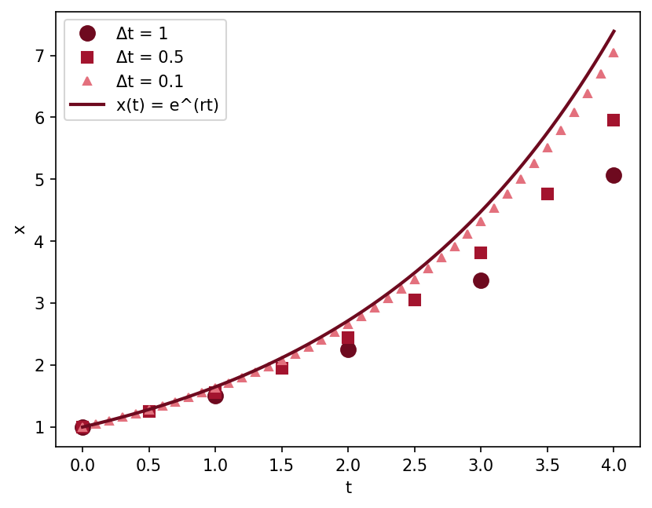
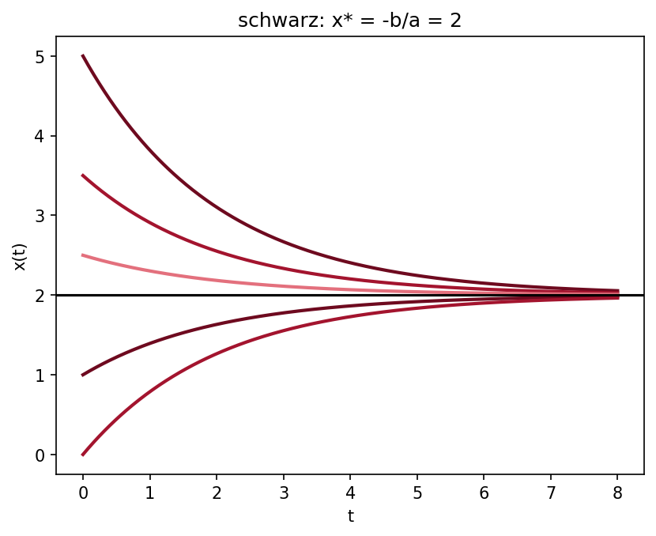
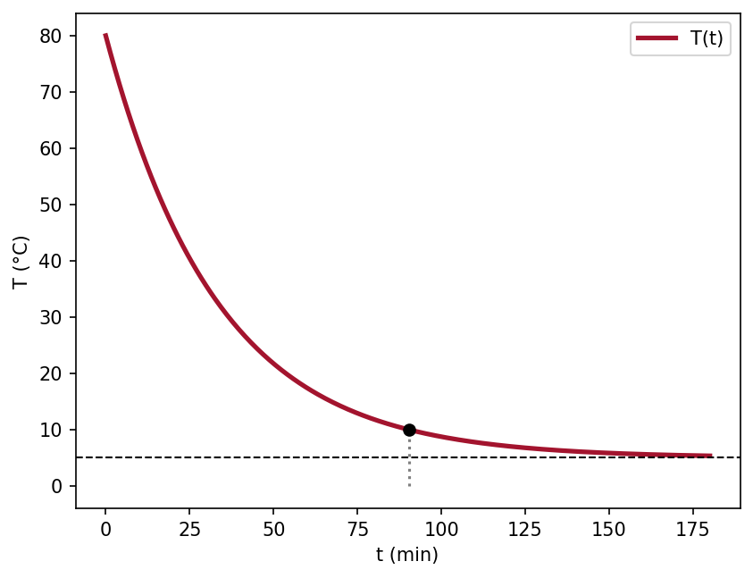
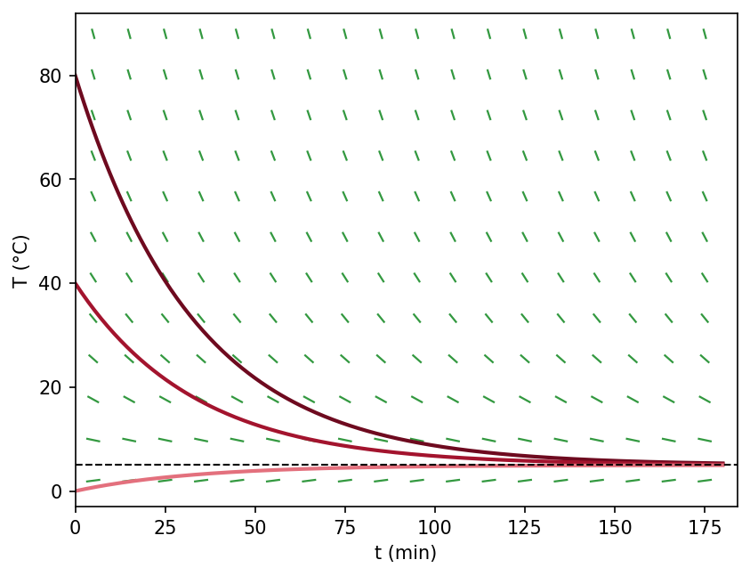
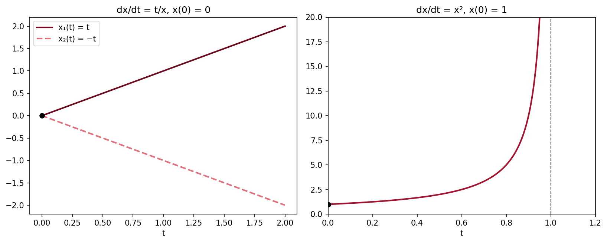

Kapitel 3 · Kontinuierliche dynamische Systeme mit einer Variablen
3.1Differentialgleichungen und Anfangswertprobleme
Lässt man den Zeitschritt einer Differenzengleichung gegen null gehen, entsteht eine Differentialgleichung: Sie beschreibt die momentane Änderungsrate dx/dt einer Größe. Zusammen mit einem Anfangswert bildet sie ein Anfangswertproblem. Seine Lösung ist eine Funktion x(t), deren Graph in jedem Punkt der Steigung des Richtungsfelds folgt.
Zu jeder Abbildung des Abschnitts finden Sie das Programm, das sie erzeugt. Ändern Sie Parameter und Startwerte und beobachten Sie, was passiert. Abbildungs- und Gleichungsnummern beziehen sich auf das Buch.
Abb. 3.1
Vom zeitdiskreten zum kontinuierlichen Wachstum
x(t + Δt) = (1 + r Δt) x(t) → dx/dt = r x
Je kleiner der Zeitschritt Δt, desto näher liegen die Werte der Differenzengleichung an der Exponentialfunktion ert. Die Ausgabe vergleicht x(4) für Δt = 1, 0.5 und 0.1 mit e2 ≈ 7.389.

# Abb. 3.1: vom zeitdiskreten zum kontinuierlichen Wachstum (Buch, Abschnitt 3.1, Gl. 3.1 und 3.2)
# x(t + dt) = (1 + r dt) x(t) mit r = 0.5, x(0) = 1 für dt = 1, 0.5, 0.1; für dt -> 0 entsteht x(t) = e^(r t)
# (c) 2026 Philipp Kügler · Programm zum Buch „Dynamische Systeme in den Lebenswissenschaften“ · MIT-Lizenz (siehe LICENSE)
using Printf, Plots
r = 0.5
rot = [RGB(0.43, 0.04, 0.12), RGB(0.64, 0.08, 0.18), RGB(0.89, 0.44, 0.49)]; zeichen = [:circle, :rect, :utriangle]
p = plot(xlabel = "t", ylabel = "x", legend = :topleft)
for (i, dt) in enumerate([1, 0.5, 0.1])
n = 0:round(Int, 4 / dt)
x = (1 + r * dt) .^ n # Lösung der Differenzengleichung
scatter!(p, n .* dt, x, marker = zeichen[i], ms = [7, 5, 3][i], color = rot[i], label = "Δt = $dt")
@printf("dt = %g: x(4) = %.4f\n", dt, x[end])
end
t = range(0, 4, length = 300)
plot!(p, t, exp.(r .* t), color = rot[1], lw = 2, label = "x(t) = e^(rt)")
@printf("e^(0.5*4) = %.4f\n", exp(2))
display(p)% Abb. 3.1: vom zeitdiskreten zum kontinuierlichen Wachstum (Buch, Abschnitt 3.1, Gl. 3.1 und 3.2)
% x(t + dt) = (1 + r dt) x(t) mit r = 0.5, x(0) = 1 für dt = 1, 0.5, 0.1; für dt -> 0 entsteht x(t) = e^(r t)
% (c) 2026 Philipp Kügler · Programm zum Buch „Dynamische Systeme in den Lebenswissenschaften“ · MIT-Lizenz (siehe LICENSE)
r = 0.5;
rot = [0.43 0.04 0.12; 0.64 0.08 0.18; 0.89 0.44 0.49]; marker = 'os^'; dts = [1 0.5 0.1];
hold on
for i = 1:3
dt = dts(i);
n = 0:round(4 / dt);
x = (1 + r * dt).^n; % Lösung der Differenzengleichung
plot(n * dt, x, marker(i), 'Color', rot(i, :), 'MarkerFaceColor', rot(i, :), 'DisplayName', sprintf('\\Delta t = %g', dt));
fprintf('dt = %g: x(4) = %.4f\n', dt, x(end));
end
t = linspace(0, 4, 300);
plot(t, exp(r * t), 'Color', rot(1, :), 'LineWidth', 2, 'DisplayName', 'x(t) = e^{rt}'); hold off
fprintf('e^(0.5*4) = %.4f\n', exp(2));
xlabel('t'); ylabel('x'); legend('show', 'Location', 'northwest');# Abb. 3.1: vom zeitdiskreten zum kontinuierlichen Wachstum (Buch, Abschnitt 3.1, Gl. 3.1 und 3.2)
# x(t + dt) = (1 + r dt) x(t) mit r = 0.5, x(0) = 1 für dt = 1, 0.5, 0.1; für dt -> 0 entsteht x(t) = e^(r t)
# (c) 2026 Philipp Kügler · Programm zum Buch „Dynamische Systeme in den Lebenswissenschaften“ · MIT-Lizenz (siehe LICENSE)
import numpy as np
import matplotlib.pyplot as plt
r = 0.5
rot = [(0.43, 0.04, 0.12), (0.64, 0.08, 0.18), (0.89, 0.44, 0.49)]
for i, dt in enumerate([1, 0.5, 0.1]):
n = np.arange(int(round(4 / dt)) + 1)
x = (1 + r * dt)**n # Lösung der Differenzengleichung
plt.plot(n * dt, x, "os^"[i], color=rot[i], ms=[9, 7, 5][i], label=f"Δt = {dt}")
print(f"dt = {dt}: x(4) = {x[-1]:.4f}")
t = np.linspace(0, 4, 300)
plt.plot(t, np.exp(r * t), color=rot[0], lw=2, label="x(t) = e^(rt)")
print(f"e^(0.5*4) = {np.exp(2):.4f}")
plt.xlabel("t"); plt.ylabel("x"); plt.legend()
plt.show()# Abb. 3.1: vom zeitdiskreten zum kontinuierlichen Wachstum (Buch, Abschnitt 3.1, Gl. 3.1 und 3.2)
# x(t + dt) = (1 + r dt) x(t) mit r = 0.5, x(0) = 1 für dt = 1, 0.5, 0.1; für dt -> 0 entsteht x(t) = e^(r t)
# (c) 2026 Philipp Kügler · Programm zum Buch „Dynamische Systeme in den Lebenswissenschaften“ · MIT-Lizenz (siehe LICENSE)
r <- 0.5
rot <- c(rgb(0.43, 0.04, 0.12), rgb(0.64, 0.08, 0.18), rgb(0.89, 0.44, 0.49)); zeichen <- c(16, 15, 17)
plot(NULL, xlim = c(0, 4), ylim = c(1, 7.5), xlab = "t", ylab = "x")
dts <- c(1, 0.5, 0.1)
for (i in 1:3) {
dt <- dts[i]
n <- 0:round(4 / dt)
x <- (1 + r * dt)^n # Lösung der Differenzengleichung
points(n * dt, x, pch = zeichen[i], col = rot[i], cex = c(1.4, 1.1, 0.7)[i])
cat(sprintf("dt = %g: x(4) = %.4f\n", dt, x[length(x)]))
}
t <- seq(0, 4, length.out = 300)
lines(t, exp(r * t), col = rot[1], lwd = 2)
cat(sprintf("e^(0.5*4) = %.4f\n", exp(2)))
legend("topleft", legend = c(sprintf("Delta t = %g", dts), "x(t) = e^(rt)"), col = c(rot, rot[1]), pch = c(zeichen, NA), lwd = c(NA, NA, NA, 2))Ausgabe im Befehlsfenster
dt = 1: x(4) = 5.0625
dt = 0.5: x(4) = 5.9605
dt = 0.1: x(4) = 7.0400
e^(0.5*4) = 7.3891Abb. 3.3
Lösungsschar einer linearen Differentialgleichung
dx/dt = a x + b, x(t) = C eat − b/a
Zu jedem Wert der Konstanten C gehört eine Lösung. Für a = −0.5 < 0 streben alle gegen die konstante Lösung x* = −b/a = 2.

# Abb. 3.3: Lösungsschar einer linearen Differentialgleichung (Buch, Abschnitt 3.1, Gl. 3.6 und 3.7)
# dx/dt = a x + b mit a = -0.5, b = 1; Lösungen x(t) = C e^(at) - b/a für verschiedene Startwerte, x* = -b/a = 2
# (c) 2026 Philipp Kügler · Programm zum Buch „Dynamische Systeme in den Lebenswissenschaften“ · MIT-Lizenz (siehe LICENSE)
using Printf, Plots
a = -0.5; b = 1
xs = -b / a # konstante Lösung
t = range(0, 8, length = 400)
rot = [RGB(0.43, 0.04, 0.12), RGB(0.64, 0.08, 0.18), RGB(0.89, 0.44, 0.49)]
p = plot(legend = false, xlabel = "t", ylabel = "x(t)", title = "schwarz: x* = -b/a = 2")
for (i, x0) in enumerate([5, 3.5, 2.5, 1, 0])
C = x0 - xs
plot!(p, t, C .* exp.(a .* t) .+ xs, color = rot[(i - 1) % 3 + 1], lw = 2)
@printf("x(0) = %g: C = %4.1f, x(8) = %.4f\n", x0, C, C * exp(8a) + xs)
end
hline!(p, [xs], color = :black, lw = 1.5)
display(p)% Abb. 3.3: Lösungsschar einer linearen Differentialgleichung (Buch, Abschnitt 3.1, Gl. 3.6 und 3.7)
% dx/dt = a x + b mit a = -0.5, b = 1; Lösungen x(t) = C e^(at) - b/a für verschiedene Startwerte, x* = -b/a = 2
% (c) 2026 Philipp Kügler · Programm zum Buch „Dynamische Systeme in den Lebenswissenschaften“ · MIT-Lizenz (siehe LICENSE)
a = -0.5; b = 1;
xs = -b / a; % konstante Lösung
t = linspace(0, 8, 400);
rot = [0.43 0.04 0.12; 0.64 0.08 0.18; 0.89 0.44 0.49];
x0s = [5 3.5 2.5 1 0];
hold on
for i = 1:5
C = x0s(i) - xs;
plot(t, C * exp(a * t) + xs, 'Color', rot(mod(i - 1, 3) + 1, :), 'LineWidth', 2);
fprintf('x(0) = %g: C = %4.1f, x(8) = %.4f\n', x0s(i), C, C * exp(8 * a) + xs);
end
plot([0 8], [xs xs], 'k', 'LineWidth', 1.5); hold off
xlabel('t'); ylabel('x(t)'); title('schwarz: x* = -b/a = 2');# Abb. 3.3: Lösungsschar einer linearen Differentialgleichung (Buch, Abschnitt 3.1, Gl. 3.6 und 3.7)
# dx/dt = a x + b mit a = -0.5, b = 1; Lösungen x(t) = C e^(at) - b/a für verschiedene Startwerte, x* = -b/a = 2
# (c) 2026 Philipp Kügler · Programm zum Buch „Dynamische Systeme in den Lebenswissenschaften“ · MIT-Lizenz (siehe LICENSE)
import numpy as np
import matplotlib.pyplot as plt
a, b = -0.5, 1
xs = -b / a # konstante Lösung
t = np.linspace(0, 8, 400)
rot = [(0.43, 0.04, 0.12), (0.64, 0.08, 0.18), (0.89, 0.44, 0.49)]
for i, x0 in enumerate([5, 3.5, 2.5, 1, 0]):
C = x0 - xs
plt.plot(t, C * np.exp(a * t) + xs, color=rot[i % 3], lw=2)
print(f"x(0) = {x0}: C = {C:4.1f}, x(8) = {C * np.exp(8 * a) + xs:.4f}")
plt.axhline(xs, color="k", lw=1.5)
plt.xlabel("t"); plt.ylabel("x(t)"); plt.title("schwarz: x* = -b/a = 2")
plt.show()# Abb. 3.3: Lösungsschar einer linearen Differentialgleichung (Buch, Abschnitt 3.1, Gl. 3.6 und 3.7)
# dx/dt = a x + b mit a = -0.5, b = 1; Lösungen x(t) = C e^(at) - b/a für verschiedene Startwerte, x* = -b/a = 2
# (c) 2026 Philipp Kügler · Programm zum Buch „Dynamische Systeme in den Lebenswissenschaften“ · MIT-Lizenz (siehe LICENSE)
a <- -0.5; b <- 1
xs <- -b / a # konstante Lösung
t <- seq(0, 8, length.out = 400)
rot <- c(rgb(0.43, 0.04, 0.12), rgb(0.64, 0.08, 0.18), rgb(0.89, 0.44, 0.49))
plot(NULL, xlim = c(0, 8), ylim = c(-0.25, 5.25), xlab = "t", ylab = "x(t)", main = "schwarz: x* = -b/a = 2")
x0s <- c(5, 3.5, 2.5, 1, 0)
for (i in seq_along(x0s)) {
C <- x0s[i] - xs
lines(t, C * exp(a * t) + xs, col = rot[(i - 1) %% 3 + 1], lwd = 2)
cat(sprintf("x(0) = %g: C = %4.1f, x(8) = %.4f\n", x0s[i], C, C * exp(8 * a) + xs))
}
abline(h = xs, lwd = 1.5)Ausgabe im Befehlsfenster
x(0) = 5: C = 3.0, x(8) = 2.0549
x(0) = 3.5: C = 1.5, x(8) = 2.0275
x(0) = 2.5: C = 0.5, x(8) = 2.0092
x(0) = 1: C = -1.0, x(8) = 1.9817
x(0) = 0: C = -2.0, x(8) = 1.9634Abb. 3.4
Abkühlung im Kühlschrank
dT/dt = k (Tu − T), T(t) = 75 e−0.03t + 5
Das Newtonsche Abkühlungsgesetz in kontinuierlicher Zeit. Das Programm berechnet, wann das Gericht 10 °C erreicht: nach t = ln(15)/k ≈ 90 Minuten.

# Abb. 3.4: Abkühlung eines Gerichts im Kühlschrank (Buch, Abschnitt 3.1, Gl. 3.3 und 3.12)
# dT/dt = k (T^u - T) mit k = 0.03 pro Minute, T^u = 5 °C, T(0) = 80 °C: T(t) = 75 e^(-0.03 t) + 5
# (c) 2026 Philipp Kügler · Programm zum Buch „Dynamische Systeme in den Lebenswissenschaften“ · MIT-Lizenz (siehe LICENSE)
using Printf, Plots
k = 0.03; Tu = 5; T0 = 80
t = range(0, 180, length = 400)
T = Tu .+ (T0 - Tu) .* exp.(-k .* t)
ts = log((T0 - Tu) / (10 - Tu)) / k # Zeitpunkt, zu dem T = 10 °C erreicht ist
@printf("T = 10 °C nach t = ln(15)/k = %.1f min\n", ts)
p = plot(t, T, color = RGB(0.64, 0.08, 0.18), lw = 2.5, label = "T(t)", xlabel = "t (min)", ylabel = "T (°C)")
hline!(p, [Tu], ls = :dash, color = :black, label = "")
plot!(p, [ts, ts], [0, 10], ls = :dot, color = :gray, label = ""); scatter!(p, [ts], [10], color = :black, label = "")
display(p)% Abb. 3.4: Abkühlung eines Gerichts im Kühlschrank (Buch, Abschnitt 3.1, Gl. 3.3 und 3.12)
% dT/dt = k (T^u - T) mit k = 0.03 pro Minute, T^u = 5 °C, T(0) = 80 °C: T(t) = 75 e^(-0.03 t) + 5
% (c) 2026 Philipp Kügler · Programm zum Buch „Dynamische Systeme in den Lebenswissenschaften“ · MIT-Lizenz (siehe LICENSE)
k = 0.03; Tu = 5; T0 = 80;
t = linspace(0, 180, 400);
T = Tu + (T0 - Tu) * exp(-k * t);
ts = log((T0 - Tu) / (10 - Tu)) / k; % Zeitpunkt, zu dem T = 10 °C erreicht ist
fprintf('T = 10 °C nach t = ln(15)/k = %.1f min\n', ts);
plot(t, T, 'Color', [0.64 0.08 0.18], 'LineWidth', 2.5); hold on
plot([0 180], [Tu Tu], 'k--');
plot([ts ts], [0 10], ':', 'Color', [0.5 0.5 0.5]); plot(ts, 10, 'ko', 'MarkerFaceColor', 'k'); hold off
xlabel('t (min)'); ylabel('T (°C)'); legend('T(t)');# Abb. 3.4: Abkühlung eines Gerichts im Kühlschrank (Buch, Abschnitt 3.1, Gl. 3.3 und 3.12)
# dT/dt = k (T^u - T) mit k = 0.03 pro Minute, T^u = 5 °C, T(0) = 80 °C: T(t) = 75 e^(-0.03 t) + 5
# (c) 2026 Philipp Kügler · Programm zum Buch „Dynamische Systeme in den Lebenswissenschaften“ · MIT-Lizenz (siehe LICENSE)
import numpy as np
import matplotlib.pyplot as plt
k, Tu, T0 = 0.03, 5, 80
t = np.linspace(0, 180, 400)
T = Tu + (T0 - Tu) * np.exp(-k * t)
ts = np.log((T0 - Tu) / (10 - Tu)) / k # Zeitpunkt, zu dem T = 10 °C erreicht ist
print(f"T = 10 °C nach t = ln(15)/k = {ts:.1f} min")
plt.plot(t, T, color=(0.64, 0.08, 0.18), lw=2.5, label="T(t)")
plt.axhline(Tu, color="k", ls="--", lw=1)
plt.plot([ts, ts], [0, 10], ":", color="0.5"); plt.plot(ts, 10, "ko")
plt.xlabel("t (min)"); plt.ylabel("T (°C)"); plt.legend()
plt.show()# Abb. 3.4: Abkühlung eines Gerichts im Kühlschrank (Buch, Abschnitt 3.1, Gl. 3.3 und 3.12)
# dT/dt = k (T^u - T) mit k = 0.03 pro Minute, T^u = 5 °C, T(0) = 80 °C: T(t) = 75 e^(-0.03 t) + 5
# (c) 2026 Philipp Kügler · Programm zum Buch „Dynamische Systeme in den Lebenswissenschaften“ · MIT-Lizenz (siehe LICENSE)
k <- 0.03; Tu <- 5; T0 <- 80
t <- seq(0, 180, length.out = 400)
T <- Tu + (T0 - Tu) * exp(-k * t)
ts <- log((T0 - Tu) / (10 - Tu)) / k # Zeitpunkt, zu dem T = 10 °C erreicht ist
cat(sprintf("T = 10 °C nach t = ln(15)/k = %.1f min\n", ts))
plot(t, T, type = "l", col = rgb(0.64, 0.08, 0.18), lwd = 2.5, xlab = "t (min)", ylab = "T (°C)")
abline(h = Tu, lty = 2)
lines(c(ts, ts), c(0, 10), lty = 3, col = "grey50"); points(ts, 10, pch = 16)
legend("topright", legend = "T(t)", col = rgb(0.64, 0.08, 0.18), lwd = 2.5)Ausgabe im Befehlsfenster
T = 10 °C nach t = ln(15)/k = 90.3 minAbb. 3.5
Richtungsfeld mit Lösungen
Steigung im Punkt (t, T): 0.03 (5 − T)
Die kurzen Striche zeigen die Steigung, die eine Lösung durch diesen Punkt hat. Man kann das Richtungsfeld zeichnen, ohne die Gleichung zu lösen.

# Abb. 3.5: Richtungsfeld der Abkühlung mit einigen Lösungen (Buch, Abschnitt 3.1, Gl. 3.3)
# In jedem Punkt (t, T) zeigt ein kurzer Strich die Steigung dT/dt = 0.03 (5 - T); die Lösungen folgen diesen Steigungen
# (c) 2026 Philipp Kügler · Programm zum Buch „Dynamische Systeme in den Lebenswissenschaften“ · MIT-Lizenz (siehe LICENSE)
using Printf, Plots
k = 0.03; Tu = 5
p = plot(legend = false, xlims = (0, 184), ylims = (-3, 92), xlabel = "t (min)", ylabel = "T (°C)")
for t in range(5, 175, length = 18), T in range(2, 88, length = 12)
S = k * (Tu - T) # Steigung dT/dt im Punkt (t, T)
dt = 4 / sqrt(1 + (S * 180 / 90)^2) # Striche gleicher Länge im Bild
plot!(p, [t - dt, t + dt], [T - S * dt, T + S * dt], color = RGB(0.2, 0.6, 0.25))
end
tt = range(0, 180, length = 300)
rot = [RGB(0.43, 0.04, 0.12), RGB(0.64, 0.08, 0.18), RGB(0.89, 0.44, 0.49)]
for (i, T0) in enumerate([80, 40, 0])
plot!(p, tt, Tu .+ (T0 - Tu) .* exp.(-k .* tt), color = rot[i], lw = 2)
@printf("T(0) = %2d: T(60) = %.2f\n", T0, Tu + (T0 - Tu) * exp(-60k))
end
hline!(p, [Tu], ls = :dash, color = :black)
display(p)% Abb. 3.5: Richtungsfeld der Abkühlung mit einigen Lösungen (Buch, Abschnitt 3.1, Gl. 3.3)
% In jedem Punkt (t, T) zeigt ein kurzer Strich die Steigung dT/dt = 0.03 (5 - T); die Lösungen folgen diesen Steigungen
% (c) 2026 Philipp Kügler · Programm zum Buch „Dynamische Systeme in den Lebenswissenschaften“ · MIT-Lizenz (siehe LICENSE)
k = 0.03; Tu = 5;
[t, T] = meshgrid(linspace(5, 175, 18), linspace(2, 88, 12));
S = k * (Tu - T); % Steigung dT/dt in jedem Punkt
dt = 4 ./ sqrt(1 + (S * 180 / 90).^2); % Striche gleicher Länge im Bild
plot([t(:) - dt(:) t(:) + dt(:)]', [T(:) - S(:) .* dt(:) T(:) + S(:) .* dt(:)]', 'Color', [0.2 0.6 0.25]); hold on
tt = linspace(0, 180, 300);
rot = [0.43 0.04 0.12; 0.64 0.08 0.18; 0.89 0.44 0.49]; T0s = [80 40 0];
for i = 1:3
plot(tt, Tu + (T0s(i) - Tu) * exp(-k * tt), 'Color', rot(i, :), 'LineWidth', 2);
fprintf('T(0) = %2d: T(60) = %.2f\n', T0s(i), Tu + (T0s(i) - Tu) * exp(-60 * k));
end
plot([0 184], [Tu Tu], 'k--'); hold off
xlabel('t (min)'); ylabel('T (°C)'); xlim([0 184]); ylim([-3 92]);# Abb. 3.5: Richtungsfeld der Abkühlung mit einigen Lösungen (Buch, Abschnitt 3.1, Gl. 3.3)
# In jedem Punkt (t, T) zeigt ein kurzer Strich die Steigung dT/dt = 0.03 (5 - T); die Lösungen folgen diesen Steigungen
# (c) 2026 Philipp Kügler · Programm zum Buch „Dynamische Systeme in den Lebenswissenschaften“ · MIT-Lizenz (siehe LICENSE)
import numpy as np
import matplotlib.pyplot as plt
k, Tu = 0.03, 5
f = lambda t, T: k * (Tu - T)
t, T = np.meshgrid(np.linspace(5, 175, 18), np.linspace(2, 88, 12))
S = f(t, T)
dt = 1 / np.sqrt(1 + (S * 180 / 90)**2) * 4 # Striche gleicher Länge im Bild (Achsen 180 min bzw. 90 °C)
plt.quiver(t, T, dt, S * dt, color=(0.2, 0.6, 0.25), angles="xy", scale_units="xy", scale=1, headwidth=0, headlength=0, headaxislength=0, pivot="mid", width=0.003)
tt = np.linspace(0, 180, 300)
rot = [(0.43, 0.04, 0.12), (0.64, 0.08, 0.18), (0.89, 0.44, 0.49)]
for i, T0 in enumerate([80, 40, 0]):
plt.plot(tt, Tu + (T0 - Tu) * np.exp(-k * tt), color=rot[i], lw=2)
print(f"T(0) = {T0:2d}: T(60) = {Tu + (T0 - Tu) * np.exp(-60 * k):.2f}")
plt.axhline(Tu, color="k", ls="--", lw=1)
plt.xlabel("t (min)"); plt.ylabel("T (°C)"); plt.xlim(0, 184); plt.ylim(-3, 92)
plt.show()# Abb. 3.5: Richtungsfeld der Abkühlung mit einigen Lösungen (Buch, Abschnitt 3.1, Gl. 3.3)
# In jedem Punkt (t, T) zeigt ein kurzer Strich die Steigung dT/dt = 0.03 (5 - T); die Lösungen folgen diesen Steigungen
# (c) 2026 Philipp Kügler · Programm zum Buch „Dynamische Systeme in den Lebenswissenschaften“ · MIT-Lizenz (siehe LICENSE)
k <- 0.03; Tu <- 5
g <- expand.grid(t = seq(5, 175, length.out = 18), T = seq(2, 88, length.out = 12))
S <- k * (Tu - g$T) # Steigung dT/dt in jedem Punkt
dt <- 4 / sqrt(1 + (S * 180 / 90)^2) # Striche gleicher Länge im Bild
plot(NULL, xlim = c(0, 184), ylim = c(-3, 92), xlab = "t (min)", ylab = "T (°C)")
segments(g$t - dt, g$T - S * dt, g$t + dt, g$T + S * dt, col = rgb(0.2, 0.6, 0.25))
tt <- seq(0, 180, length.out = 300)
rot <- c(rgb(0.43, 0.04, 0.12), rgb(0.64, 0.08, 0.18), rgb(0.89, 0.44, 0.49))
T0s <- c(80, 40, 0)
for (i in 1:3) {
lines(tt, Tu + (T0s[i] - Tu) * exp(-k * tt), col = rot[i], lwd = 2)
cat(sprintf("T(0) = %2d: T(60) = %.2f\n", T0s[i], Tu + (T0s[i] - Tu) * exp(-60 * k)))
}
abline(h = Tu, lty = 2)Ausgabe im Befehlsfenster
T(0) = 80: T(60) = 17.40
T(0) = 40: T(60) = 10.79
T(0) = 0: T(60) = 4.17Abb. 3.6
Grenzen von Existenz und Eindeutigkeit
dx/dt = t/x, x(0) = 0 bzw. dx/dt = x2, x(0) = 1
Links hat das Anfangswertproblem zwei Lösungen, rechts wächst die Lösung 1/(1 − t) in endlicher Zeit über alle Grenzen.

# Abb. 3.6: Anfangswertprobleme ohne eindeutige oder ohne globale Lösung (Buch, Abschnitt 3.1)
# links dx/dt = t/x, x(0) = 0: x(t) = t und x(t) = -t lösen beide; rechts dx/dt = x^2, x(0) = 1: x(t) = 1/(1 - t) nur für t < 1
# (c) 2026 Philipp Kügler · Programm zum Buch „Dynamische Systeme in den Lebenswissenschaften“ · MIT-Lizenz (siehe LICENSE)
using Printf, Plots
t = range(0, 2, length = 100)
p1 = plot(t, t, color = RGB(0.43, 0.04, 0.12), lw = 2, label = "x₁(t) = t", title = "dx/dt = t/x, x(0) = 0", xlabel = "t")
plot!(p1, t, -t, ls = :dash, color = RGB(0.89, 0.44, 0.49), lw = 2, label = "x₂(t) = -t"); scatter!(p1, [0], [0], color = :black, label = "")
t = range(0, 0.95, length = 200)
p2 = plot(t, 1 ./ (1 .- t), color = RGB(0.64, 0.08, 0.18), lw = 2, legend = false, xlims = (0, 1.2), ylims = (0, 20),
title = "dx/dt = x², x(0) = 1", xlabel = "t")
vline!(p2, [1], ls = :dash, color = :black); scatter!(p2, [0], [1], color = :black)
for tt in (0.5, 0.9, 0.99)
@printf("x(%g) = 1/(1 - %g) = %.0f\n", tt, tt, 1 / (1 - tt))
end
display(plot(p1, p2, layout = (1, 2), size = (900, 420)))% Abb. 3.6: Anfangswertprobleme ohne eindeutige oder ohne globale Lösung (Buch, Abschnitt 3.1)
% links dx/dt = t/x, x(0) = 0: x(t) = t und x(t) = -t lösen beide; rechts dx/dt = x^2, x(0) = 1: x(t) = 1/(1 - t) nur für t < 1
% (c) 2026 Philipp Kügler · Programm zum Buch „Dynamische Systeme in den Lebenswissenschaften“ · MIT-Lizenz (siehe LICENSE)
subplot(1, 2, 1);
t = linspace(0, 2, 100);
plot(t, t, 'Color', [0.43 0.04 0.12], 'LineWidth', 2); hold on
plot(t, -t, '--', 'Color', [0.89 0.44 0.49], 'LineWidth', 2); plot(0, 0, 'ko', 'MarkerFaceColor', 'k'); hold off
title('dx/dt = t/x, x(0) = 0'); legend('x_1(t) = t', 'x_2(t) = -t'); xlabel('t');
subplot(1, 2, 2);
t = linspace(0, 0.95, 200);
plot(t, 1 ./ (1 - t), 'Color', [0.64 0.08 0.18], 'LineWidth', 2); hold on
plot([1 1], [0 20], 'k--'); plot(0, 1, 'ko', 'MarkerFaceColor', 'k'); hold off
ylim([0 20]); xlim([0 1.2]); title('dx/dt = x^2, x(0) = 1'); xlabel('t');
for tt = [0.5 0.9 0.99]
fprintf('x(%g) = 1/(1 - %g) = %.0f\n', tt, tt, 1 / (1 - tt));
end# Abb. 3.6: Anfangswertprobleme ohne eindeutige oder ohne globale Lösung (Buch, Abschnitt 3.1)
# links dx/dt = t/x, x(0) = 0: x(t) = t und x(t) = -t lösen beide; rechts dx/dt = x^2, x(0) = 1: x(t) = 1/(1 - t) nur für t < 1
# (c) 2026 Philipp Kügler · Programm zum Buch „Dynamische Systeme in den Lebenswissenschaften“ · MIT-Lizenz (siehe LICENSE)
import numpy as np
import matplotlib.pyplot as plt
fig, axs = plt.subplots(1, 2, figsize=(11, 4.5))
t = np.linspace(0, 2, 100)
axs[0].plot(t, t, color=(0.43, 0.04, 0.12), lw=2, label="x₁(t) = t")
axs[0].plot(t, -t, "--", color=(0.89, 0.44, 0.49), lw=2, label="x₂(t) = −t")
axs[0].plot(0, 0, "ko"); axs[0].set_title("dx/dt = t/x, x(0) = 0"); axs[0].legend(); axs[0].set_xlabel("t")
t = np.linspace(0, 0.95, 200)
axs[1].plot(t, 1 / (1 - t), color=(0.64, 0.08, 0.18), lw=2); axs[1].axvline(1, color="k", ls="--", lw=1)
axs[1].plot(0, 1, "ko"); axs[1].set_ylim(0, 20); axs[1].set_xlim(0, 1.2)
axs[1].set_title("dx/dt = x², x(0) = 1"); axs[1].set_xlabel("t")
for tt in [0.5, 0.9, 0.99]:
print(f"x({tt}) = 1/(1 - {tt}) = {1 / (1 - tt):.0f}")
plt.tight_layout()
plt.show()# Abb. 3.6: Anfangswertprobleme ohne eindeutige oder ohne globale Lösung (Buch, Abschnitt 3.1)
# links dx/dt = t/x, x(0) = 0: x(t) = t und x(t) = -t lösen beide; rechts dx/dt = x^2, x(0) = 1: x(t) = 1/(1 - t) nur für t < 1
# (c) 2026 Philipp Kügler · Programm zum Buch „Dynamische Systeme in den Lebenswissenschaften“ · MIT-Lizenz (siehe LICENSE)
par(mfrow = c(1, 2))
t <- seq(0, 2, length.out = 100)
plot(t, t, type = "l", col = rgb(0.43, 0.04, 0.12), lwd = 2, ylim = c(-2, 2), xlab = "t", ylab = "", main = "dx/dt = t/x, x(0) = 0")
lines(t, -t, lty = 2, col = rgb(0.89, 0.44, 0.49), lwd = 2); points(0, 0, pch = 16)
legend("topleft", legend = c("x_1(t) = t", "x_2(t) = -t"), col = c(rgb(0.43, 0.04, 0.12), rgb(0.89, 0.44, 0.49)), lty = c(1, 2), lwd = 2)
t <- seq(0, 0.95, length.out = 200)
plot(t, 1 / (1 - t), type = "l", col = rgb(0.64, 0.08, 0.18), lwd = 2, xlim = c(0, 1.2), ylim = c(0, 20), xlab = "t", ylab = "",
main = "dx/dt = x^2, x(0) = 1")
abline(v = 1, lty = 2); points(0, 1, pch = 16)
for (tt in c(0.5, 0.9, 0.99)) cat(sprintf("x(%g) = 1/(1 - %g) = %.0f\n", tt, tt, 1 / (1 - tt)))Ausgabe im Befehlsfenster
x(0.5) = 1/(1 - 0.5) = 2
x(0.9) = 1/(1 - 0.9) = 10
x(0.99) = 1/(1 - 0.99) = 100MATLAB-Apps aus der Vorlesung
Herunterladen, in einen Ordner legen und in MATLAB den Namen ohne Endung eingeben, z. B. richtungsfeld_app. Die Apps nutzen die grafische Oberfläche von MATLAB und laufen nicht in GNU Octave.
- richtungsfeld_app.mRichtungsfeld und Lösungen von Anfangswertproblemen